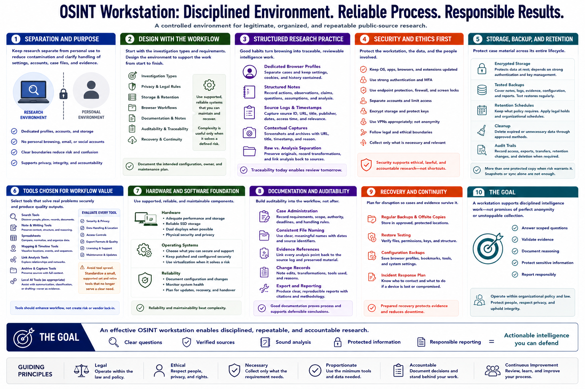

Course Summary and Key Takeaways
Connecting to LMS... Progress: in progress

Narration
An OSINT workstation is a controlled environment for legitimate, organized, and repeatable public-source research. Separation from personal browsing reduces contamination and supports clear handling of settings, accounts, case files, and evidence.
Design starts with investigation types, privacy rules, storage, browser workflows, documentation, auditability, and recovery. Hardware and operating systems should be supported, reliable, and maintainable. Complexity is useful only when it solves a defined risk.
Dedicated browser profiles, structured notes, source logs, timestamps, contextual captures, and raw-versus-analysis separation preserve traceability. Security depends on updates, strong authentication, endpoint protection, account separation, access limits, and ethical boundaries.
Encrypted storage, tested backups, retention schedules, cleanup, and audit trails protect case material throughout its lifecycle. Tools should be selected for workflow value, security, data handling, and export quality rather than popularity or novelty.
The goal is disciplined intelligence work, not collecting tools or claiming perfect anonymity. A good workstation helps analysts answer scoped questions, validate evidence, document reasoning, protect sensitive information, and report responsibly under organizational policy and law.